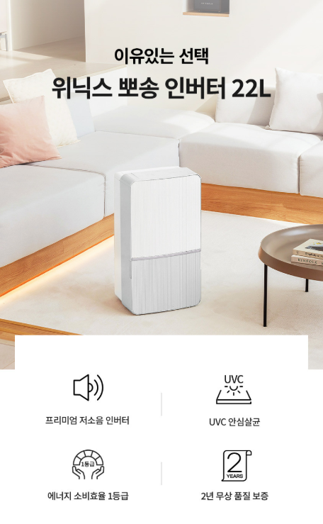
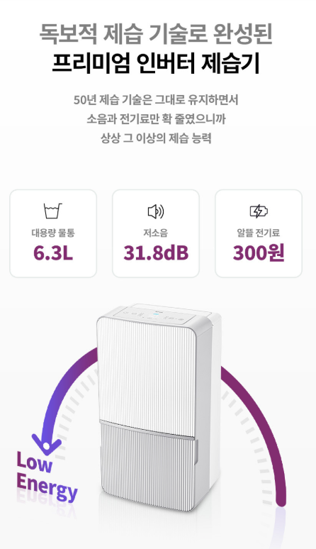

1. 위닉스 뽀송 인버터 제습기 22L은 어떤 제품일까?
일일 제습능력 22L와 제습전용면적 95.0㎡를 갖춘 인버터 방식의 대용량 제습기입니다. 구매 전에는 정확한 모델명과 사용 목적, 포함 구성품과 관리 방법을 함께 확인하는 것이 좋습니다.
2. 22L 제습능력과 사용 공간
위닉스 공식 사양 기준 일일 제습능력은 22L이며 제습전용면적은 95.0㎡입니다. 거실과 방, 드레스룸 등 비교적 넓은 공간에서 습도를 관리하려는 경우 살펴보기 좋은 용량입니다. 실제 제습량은 실내 온도와 습도, 문 개방 여부에 따라 달라질 수 있습니다.

3. 6.3L 물통과 연속 배수
전체 물통용량은 6.3L, 만수 기준은 5.5L로 안내됩니다. 장시간 제습할 경우 물통을 자주 비우는 번거로움이 있을 수 있으므로 연속 배수 호스 사용 가능 여부와 배수 위치를 함께 확인하는 것이 좋습니다.
4. 인버터 방식과 에너지효율
해당 모델은 인버터 제습기로 에너지효율 1등급, 소비전력 340W로 안내됩니다. 장시간 사용하는 가전인 만큼 정격 소비전력뿐 아니라 자동 습도 조절과 절전 운전 기능을 어떻게 활용할 수 있는지 살펴보세요.

5. 이동과 설치 공간
공식 크기는 360×280×660mm, 무게는 17.2kg입니다. 바퀴와 손잡이가 있어도 계단 이동은 부담이 될 수 있으므로 주로 사용할 층과 공간을 정해 두는 것이 좋습니다. 흡입구와 배출구 주변에는 공기가 흐를 여유 공간을 확보하세요.
6. 필터와 물통 관리
제습기는 필터에 먼지가 쌓이면 공기 흐름이 줄어 성능이 떨어질 수 있습니다. 물통 역시 장기간 물을 방치하면 냄새가 날 수 있으므로 주기적으로 세척하고 완전히 건조하는 것이 좋습니다.
7. 구매 전 체크리스트
- 정확한 모델명과 옵션을 확인합니다.
- 사용 공간과 목적에 맞는 제품인지 확인합니다.
- 기본 구성품과 별도 구매 소모품을 확인합니다.
- 설치·보관 공간을 확인합니다.
- 세척 및 관리 방법을 확인합니다.
- 배송, 교환, 반품과 보증 조건을 확인합니다.
싸게살래 가전·디지털 목록에서 다양한 제품 구매 가이드를 확인할 수 있습니다.
가전·디지털 전체 상품 보기 →자주 묻는 질문
구매 전에 가장 먼저 확인할 것은 무엇인가요?
정확한 모델명과 핵심 사양, 구성품과 보증 조건을 먼저 확인하는 것이 좋습니다.
온라인 가격은 계속 같은가요?
쿠폰과 판매자, 재고에 따라 달라질 수 있으므로 최종 결제 화면의 가격을 확인해야 합니다.